Numerical Methods
§1Interpolation
Given a set of $n+1$ data points $(x_0, y_0), \ldots, (x_n, y_n)$, interpolation asks for a function $p(x)$ that passes exactly through every point. This arises constantly in practice: reconstructing a continuous signal from discrete sensor readings, evaluating a look-up table at an arbitrary query point, or building a smooth curve through experimentally measured data. The key design question is what class of function to use.
1.1 Lagrange Polynomial Interpolation
The most conceptually direct approach is to construct a single polynomial of degree $n$ that passes through all $n+1$ nodes. The Lagrange form achieves this by writing the interpolant as a linear combination of specially designed basis polynomials $L_i(x)$, each of which equals 1 at its own node and 0 at every other node:
This form is elegant but computationally expensive: evaluating $p(x)$ at a single point requires $O(n^2)$ multiplications, and adding a new data point forces a complete recomputation of all $n+1$ basis polynomials. For these reasons, Lagrange interpolation is mostly used as a theoretical tool rather than in production code.
1.2 Newton's Divided Differences
Newton's form represents the same polynomial more efficiently using a triangular table of divided differences:
where the divided-difference coefficients are computed recursively:
The crucial practical advantage is incrementality: if a new data point $(x_{n+1}, y_{n+1})$ arrives, only one new column of the triangular table needs to be computed. Once the coefficient table is built in $O(n^2)$, evaluation at any $x$ via Horner's method costs only $O(n)$. Both the Lagrange and Newton forms produce identical polynomials — they are simply two representations of the unique degree-$n$ interpolant through $n+1$ points.
The figure below (produced by interpolation.py) demonstrates all three methods on the smooth test function $f(x) = \sin(2x)\,e^{-x^2/2}$ using 8 equally-spaced nodes, with a per-method absolute error panel in the lower right.

1.3 Runge's Phenomenon
A critical limitation of high-degree polynomial interpolation is Runge's phenomenon: even when the underlying function is perfectly smooth, the interpolating polynomial can develop large oscillations near the endpoints of the interval when nodes are equally spaced. The classic demonstration uses Runge's function:
This function is infinitely differentiable, yet the polynomial interpolant diverges as $n$ increases. The root cause is that the Lebesgue constant — which measures how much the interpolation scheme amplifies errors — grows exponentially with $n$ for equally-spaced nodes.

Two remedies exist: (1) use Chebyshev nodes $x_k = \cos\!\left(\tfrac{(2k+1)\pi}{2(n+1)}\right)$, which cluster near the endpoints and suppress oscillation, achieving near-optimal polynomial interpolation for analytic functions; or (2) switch to piecewise interpolation.
1.4 Cubic Spline Interpolation
Rather than fitting a single polynomial of degree $n$, a cubic spline fits a separate cubic polynomial on each sub-interval $[x_i, x_{i+1}]$, then enforces that the pieces join smoothly — with matching values, first derivatives, and second derivatives at every interior node. This gives a piecewise function $S(x)$ that is globally $C^2$-smooth:
The smoothness conditions yield a tridiagonal linear system of size $(n-1) \times (n-1)$, which is solved in $O(n)$ by the Thomas algorithm. The natural spline boundary condition sets $S''(x_0) = S''(x_n) = 0$; other choices include clamped (prescribed endpoint slopes) and not-a-knot (used by MATLAB's spline function).
Cubic splines converge at $O(h^4)$ for smooth functions and are completely immune to Runge's phenomenon. They are the default choice for smooth interpolation in production code.

1.5 Implementation & When to Use
CubicSpline for almost all interpolation tasks. It is robust, fast, and avoids every pitfall discussed above. Reach for polynomial interpolation only when you have very few points (<6) or need the incremental update property of Newton's form.
Smooth continuous interpolation (the default case)
from scipy.interpolate import CubicSpline
import numpy as np
x_nodes = np.linspace(0, 2 * np.pi, 8)
y_nodes = np.sin(x_nodes)
cs = CubicSpline(x_nodes, y_nodes) # build once
x_query = np.linspace(0, 2 * np.pi, 500)
y_interp = cs(x_query) # evaluate anywhere
# Derivatives are available directly
dy = cs(x_query, 1) # first derivative
d2y = cs(x_query, 2) # second derivativeIncremental updates (Newton's divided differences)
# Use when data arrives sequentially and you need to add nodes cheaply.
# numpy.polynomial.polynomial is a cleaner interface for production use;
# the manual divided-difference table in interpolation.py shows the mechanics.
from numpy.polynomial.polynomial import Polynomial
# For most real tasks, scipy.interpolate.BarycentricInterpolator gives
# the same result as Lagrange/Newton with stable numerics:
from scipy.interpolate import BarycentricInterpolator
bi = BarycentricInterpolator(x_nodes, y_nodes)
print(bi([1.0, 1.5, 2.0])) # query at multiple pointsChoosing a method
| Situation | Recommended method |
|---|---|
| Smooth data, moderate $n$ (most cases) | scipy.interpolate.CubicSpline |
| Very few points (<6), one-off evaluation | Lagrange / BarycentricInterpolator |
| Data arriving incrementally | Newton divided differences |
| High-accuracy, analytic function, arbitrary precision | Chebyshev nodes + polynomial |
| Non-smooth / noisy data | Least-squares fit or scipy.interpolate.UnivariateSpline |
§2Root Finding
A root-finding problem asks for a value $x^*$ satisfying $f(x^*) = 0$. This arises whenever a model equation cannot be solved analytically: equilibrium conditions in physics, implicit constitutive relations in materials science, pricing equations in finance. We study three iterative methods that make successively stronger assumptions in exchange for faster convergence.
2.1 Bisection Method
Bisection is the simplest bracketing method. Starting from an interval $[a, b]$ where $f(a)$ and $f(b)$ have opposite signs (guaranteeing a root exists by the Intermediate Value Theorem), it iteratively halves the bracket:
Bisection always converges. It requires exactly $\lceil\log_2((b-a)/\varepsilon)\rceil$ iterations to achieve absolute error $\varepsilon$ — for instance, 34 iterations to go from an interval of width 1 to machine precision. Its linear convergence makes it slow compared to Newton-Raphson for smooth functions, but it is the right tool when $f$ is not differentiable or when a guaranteed bracket is needed.
2.2 Newton-Raphson Method
Newton-Raphson approximates the root by following the tangent line from the current point. Given $x_n$, the next iterate is the zero of the linear Taylor expansion of $f$ at $x_n$:
Near a simple root, Newton-Raphson converges quadratically: the number of correct decimal digits roughly doubles each iteration. Formally, if $|e_n| = |x_n - x^*|$, then $|e_{n+1}| \approx C |e_n|^2$ where $C = |f''(x^*)| / (2|f'(x^*)|)$. Starting from $x_0 \approx 1.5$ on $f(x) = x^3 - x - 2$, the method reaches machine precision in fewer than 8 iterations. The cost is that $f'$ must be computable, and the method can diverge for poor starting guesses or near inflection points.
2.3 Secant Method
The secant method retains Newton's speed without requiring an analytic derivative by approximating $f'(x_n)$ with a finite-difference quotient using the previous two iterates:
Its convergence order is the golden ratio $\phi \approx 1.618$ — slower than Newton's quadratic rate but still superlinear, meaning the error shrinks faster than any geometric sequence. Each step costs exactly one function evaluation (compared to Newton's two: $f$ and $f'$), making it highly efficient when $f'$ is expensive or unavailable.
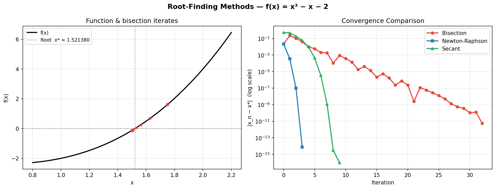
2.4 The Newton Fractal — Basins of Attraction
Applied to a polynomial with multiple roots in the complex plane, Newton-Raphson partitions the complex plane into basins of attraction — regions from which a given root is reached. For $p(z) = z^3 - 1$, which has three cube roots of unity equally spaced on the unit circle, these basins have an intricate fractal boundary. The image below colours each point $z_0 \in \mathbb{C}$ by which root Newton's method converges to, with intensity encoding iteration count.
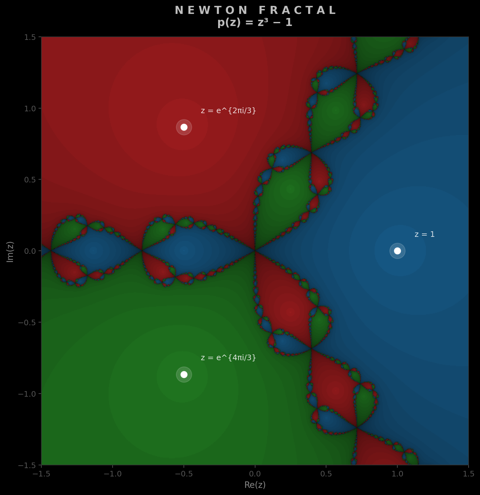
This illustrates why Newton-Raphson can be sensitive to initial conditions: starting points near the fractal boundaries can converge to any of the three roots unpredictably. In practice this motivates hybrid strategies — first bracket with bisection, then switch to Newton-Raphson for fast refinement.
2.5 Implementation & When to Use
scipy.optimize.brentq — it combines bisection and secant (and inverse quadratic interpolation) to get superlinear convergence with guaranteed robustness. For systems of equations, use scipy.optimize.fsolve or scipy.optimize.root.
Scalar root finding (most common case)
from scipy.optimize import brentq, newton
f = lambda x: x**3 - x - 2
# Brent's method: robust bracketed solver (best general choice)
root = brentq(f, a=1.0, b=2.0, xtol=1e-12)
print(f"Root: {root:.10f}") # 1.5213797068
# Newton-Raphson via scipy (supply derivative for speed)
df = lambda x: 3*x**2 - 1
root_nr = newton(f, x0=1.5, fprime=df)
# Secant method via scipy (no derivative)
root_sec = newton(f, x0=1.5) # fprime=None → uses secantSystems of nonlinear equations
from scipy.optimize import fsolve
import numpy as np
def system(vars):
x, y = vars
return [x**2 + y**2 - 1, # x² + y² = 1
y - x**2] # y = x²
solution = fsolve(system, x0=[0.6, 0.4])
print(solution) # [0.7862, 0.6180]Choosing a method
| Situation | Recommended method |
|---|---|
| Known bracket, no derivative (most cases) | scipy.optimize.brentq |
| Smooth $f$, derivative available, fast convergence needed | Newton-Raphson / scipy.optimize.newton(fprime=df) |
| Smooth $f$, derivative unavailable | Secant / scipy.optimize.newton() |
| System of equations | scipy.optimize.fsolve or .root |
| Global search (multiple roots suspected) | Bisection scan + local refinement |
§3ODE Solvers
An ordinary differential equation (ODE) initial value problem (IVP) takes the form $\mathbf{y}'(t) = \mathbf{f}(t, \mathbf{y})$, $\mathbf{y}(t_0) = \mathbf{y}_0$. Explicit time-stepping methods march forward from $t_0$, computing $\mathbf{y}_{n+1}$ from some combination of $f$ evaluated at past times. The central design trade-off is between accuracy per step (order of the method) and the number of function evaluations required.
3.1 Forward Euler
The simplest method: use the current slope to step forward by $h$:
The local truncation error per step is $O(h^2)$, giving a global error (accumulated over $T/h$ steps) of $O(h)$. Halving the step size halves the error. Euler's method is exact only for linear growth; it introduces artificial energy growth in oscillatory systems, making it inappropriate for anything beyond demonstration and education.
3.2 Heun's Method (RK2)
Heun's method is a second-order Runge-Kutta scheme using a predictor-corrector structure. The predicted endpoint slope is averaged with the initial slope:
Two function evaluations per step buy a global error of $O(h^2)$ — halving $h$ reduces error by a factor of 4. The midpoint method and Heun's method are both second-order RK schemes; they differ only in the intermediate evaluation point.
3.3 Classic RK4
The fourth-order Runge-Kutta method is the most widely used fixed-step integrator in science and engineering. It takes a weighted average of four slope estimates within the step:
Four evaluations per step gives global error $O(h^4)$: halving $h$ reduces error by a factor of 16. For the scalar test problem $y' = -y$ (exact solution $e^{-t}$), the figure below confirms the theoretical rates directly — the log-log convergence plot shows slopes of approximately $-1$, $-2$, and $-4$ for Euler, Heun, and RK4 respectively, exactly as theory predicts.

3.4 Adams-Bashforth Multi-Step Methods
The Runge-Kutta family are single-step methods: each step uses only $(t_n, \mathbf{y}_n)$ and discards all prior history. Multi-step methods instead reuse function evaluations from previous steps, evaluating $f$ only once per step after a short startup phase. The Adams-Bashforth family is the canonical explicit multi-step scheme; its $k$-step variant is derived by integrating the degree-$(k-1)$ polynomial interpolant of $f$ through the last $k$ known values of $f$.
The two most useful members are AB2 (order 2, two steps) and AB4 (order 4, four steps):
where $\mathbf{f}_n = \mathbf{f}(t_n, \mathbf{y}_n)$. Because each AB step recycles previously computed $\mathbf{f}$-values, the per-step cost after startup is exactly one new function evaluation, compared to four for RK4. For problems where $\mathbf{f}$ is expensive to compute — such as N-body gravity or finite-element force assembly — this can translate to a fourfold speedup at the same accuracy order.
The trade-off is that Adams-Bashforth methods are not self-starting: the first $k-1$ steps must be bootstrapped with a single-step method (typically RK4). They also have a narrower absolute stability region than RK4, which means they require a smaller step size for oscillatory or mildly stiff equations to remain stable.
The Adams-Bashforth-Moulton predictor-corrector (AB predict, AM correct) pairs an explicit AB step with an implicit Adams-Moulton corrector. This restores a larger stability region at the cost of one extra $f$-evaluation per step, giving order $p+1$ accuracy from an order-$p$ predictor.

3.5 Phase Space Analysis — Damped Pendulum
For autonomous systems (where $f$ does not depend explicitly on $t$), the trajectory in phase space — the space of state variables — reveals the qualitative behaviour without solving for $y(t)$ explicitly. The damped pendulum, governed by $\theta'' = -b\,\theta' - (g/L)\sin\theta$, is a classic example: starting from various initial angles, every trajectory spirals inwards to the stable equilibrium $(\theta, \dot\theta) = (0, 0)$.

3.6 Implementation & When to Use
scipy.integrate.solve_ivp for all production ODE solving. It provides adaptive step-size control, dense output, and event detection. The default method (RK45) is a Dormand-Prince pair that combines 4th and 5th order estimates to adapt $h$ automatically. For stiff problems (e.g. chemical kinetics, electrical circuits), specify method='LSODA' or 'BDF'.
Standard non-stiff IVP
from scipy.integrate import solve_ivp
import numpy as np
# Damped pendulum: state = [theta, omega]
def pendulum(t, y, b=0.3, g_over_L=9.81):
theta, omega = y
return [omega, -b * omega - g_over_L * np.sin(theta)]
sol = solve_ivp(
pendulum, t_span=(0, 20), y0=[2.0, 0.0],
method='RK45', # default: adaptive 4/5 order
rtol=1e-6, # relative tolerance
dense_output=True # allows sol.sol(t) for arbitrary t
)
t_fine = np.linspace(0, 20, 1000)
theta, omega = sol.sol(t_fine) # dense outputStiff systems
# Robertson chemical kinetics — classic stiff problem
def robertson(t, y):
k1, k2, k3 = 0.04, 3e7, 1e4
return [
-k1*y[0] + k3*y[1]*y[2],
k1*y[0] - k2*y[1]**2 - k3*y[1]*y[2],
k2*y[1]**2
]
sol = solve_ivp(robertson, (0, 1e11), [1, 0, 0],
method='LSODA', rtol=1e-6, atol=1e-9)Choosing a method
| Problem type | Recommended solver |
|---|---|
| General non-stiff IVP (most physics) | solve_ivp(method='RK45') — adaptive, default |
| High accuracy, smooth solution | solve_ivp(method='DOP853') — 8th order |
| Expensive $f$, fixed step, non-stiff | Adams-Bashforth 4 — 1 eval/step after startup |
| Stiff (chemistry, circuits, PDEs) | solve_ivp(method='LSODA') or 'BDF' |
| Symplectic (Hamiltonian / energy-conserving) | Verlet or leapfrog integration (not in scipy) |
| Educational / custom RHS experiments | Hand-coded RK4 or AB4 (see ode_solvers.py) |
§4Numerical Integration (Quadrature)
Numerical quadrature approximates $I = \int_a^b f(x)\,dx$ when the antiderivative of $f$ is unavailable or impractical. All methods take the form of a weighted sum of function values: $I \approx \sum_{i=1}^n w_i\,f(x_i)$. The methods differ in how nodes $x_i$ and weights $w_i$ are chosen.
4.1 Composite Trapezoidal Rule
The trapezoidal rule approximates $f$ on each panel $[x_i, x_{i+1}]$ by a straight line and integrates the resulting trapezoid. Over $n$ equally-spaced panels of width $h = (b-a)/n$:
An often-overlooked strength: for periodic functions integrated over a full period, the trapezoidal rule converges exponentially (not just $O(h^2)$), making it the method of choice for Fourier-type integrals.
4.2 Composite Simpson's 1/3 Rule
Instead of a linear approximation, Simpson's rule fits a quadratic (parabola) through each consecutive triple of points, integrating the parabola exactly. The composite rule over $n$ panels (n must be even) is:
With the same number of function evaluations, Simpson's rule is dramatically more accurate than the trapezoidal rule for smooth integrands. It should be the default manual quadrature method whenever $n$ is even and $f$ is smooth.
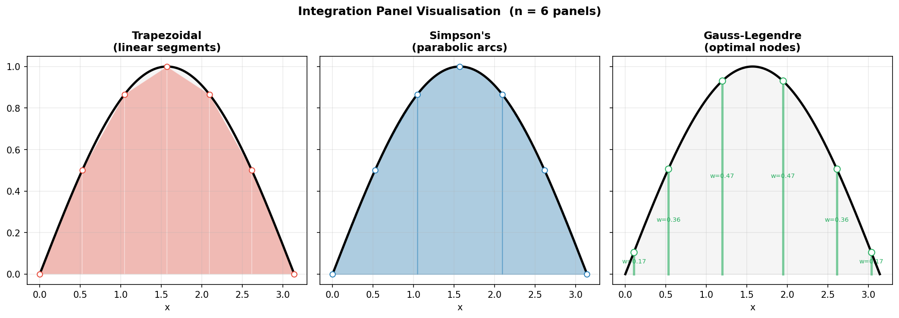
4.3 Gauss-Legendre Quadrature
Gauss-Legendre quadrature chooses both the node positions and weights to maximise the degree of polynomial that is integrated exactly. An $n$-point Gauss-Legendre rule is exact for any polynomial of degree $\leq 2n - 1$, using only $n$ function evaluations. The nodes are the roots of the Legendre polynomial $P_n(x)$, mapped to $[a, b]$:
where $t_i \in (-1, 1)$ are the roots of $P_n(t)$ and $w_i = 2/\bigl[(1-t_i^2)(P_n'(t_i))^2\bigr]$. For a smooth function, a 5-point Gauss-Legendre rule typically outperforms a 50-point trapezoidal rule. Nodes cluster near the endpoints — the opposite of Runge's phenomenon, and for the same reason: optimal node placement near $\pm 1$ suppresses the polynomial approximation error.
4.4 Convergence Analysis
The convergence plot below integrates $\int_0^\pi \sin(x)\,dx = 2$ with increasing numbers of nodes. The log-log plot confirms the theoretical convergence orders: a slope of $-2$ for the trapezoidal rule, $-4$ for Simpson's, and a dramatically steep drop for Gauss-Legendre, which achieves errors below $10^{-14}$ with fewer than 10 points.
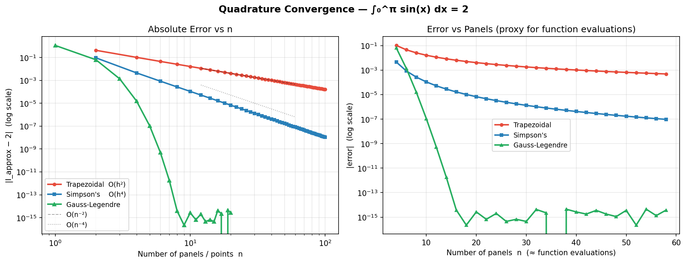
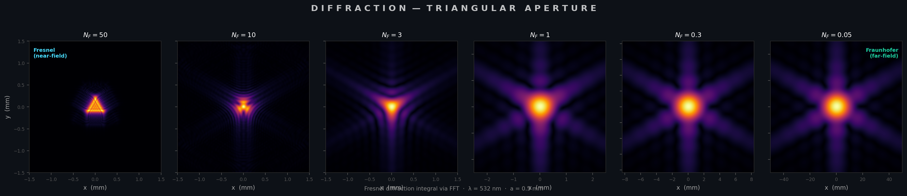
4.5 Implementation & When to Use
scipy.integrate.quad for one-dimensional integrals — it implements adaptive Gauss-Kronrod quadrature and handles singularities, infinite limits, and discontinuities automatically. For repeated evaluation of the same integral with different parameters, scipy.integrate.fixed_quad (Gauss-Legendre with fixed $n$) is faster. Use the composite rules directly only when you have pre-sampled data at fixed points.
General purpose — adaptive quadrature
from scipy.integrate import quad
import numpy as np
# Standard smooth integral
result, error = quad(np.sin, 0, np.pi)
print(f"{result:.15f} ± {error:.1e}") # 2.000000000000000 ± 2.2e-14
# Integral with singularity at x=0
result, _ = quad(lambda x: np.log(x) * np.sqrt(x), 0, 1,
limit=100) # increase subdivision limit
# Infinite limits
result, _ = quad(lambda x: np.exp(-x**2), -np.inf, np.inf)
print(result) # sqrt(pi) ≈ 1.7725Fixed-point integration (repeated evaluations / vectorised)
from scipy.integrate import fixed_quad, quadrature
# Fast fixed Gauss-Legendre (n=10 points, exact for polynomials ≤ deg 19)
result, _ = fixed_quad(np.sin, 0, np.pi, n=10)
# Integrating tabulated/sampled data (composite trapezoidal)
x_data = np.linspace(0, np.pi, 1000)
y_data = np.sin(x_data)
result = np.trapz(y_data, x_data) # vectorised trapezoidal
# Simpson's rule on sampled data (n must be odd number of points)
from scipy.integrate import simpson
result = simpson(y_data, x=x_data)Choosing a method
| Situation | Recommended method |
|---|---|
| Arbitrary smooth function, general use | scipy.integrate.quad (adaptive Gauss-Kronrod) |
| Same function, many parameter values | scipy.integrate.fixed_quad (fixed Gauss-Legendre) |
| Pre-sampled/tabulated data | numpy.trapz or scipy.integrate.simpson |
| Periodic function over full period | Trapezoidal rule (exponentially convergent) |
| Singularities or infinite limits | scipy.integrate.quad with points or limit options |
| Multi-dimensional integrals | scipy.integrate.dblquad / nquad or Monte Carlo |
§5FFT & Spectral Methods
The Discrete Fourier Transform (DFT) and its fast algorithm (FFT) underpin an extraordinary range of numerical methods: signal processing, spectral analysis, fast convolution, PDE solvers, and the diffraction simulation in §4. This section develops the theory from the DFT definition through the Cooley-Tukey radix-2 FFT, extends it to two dimensions and power-spectrum estimation, and shows how Fourier and Chebyshev spectral methods achieve exponential convergence for smooth functions.
5.1 The Discrete Fourier Transform
Given a sequence $\{x_0, x_1, \ldots, x_{N-1}\}$, its DFT is the sequence of $N$ complex coefficients:
In matrix form, $\mathbf{X} = \mathbf{F}_N \mathbf{x}$ where $(\mathbf{F}_N)_{kn} = \omega_N^{kn}$ with $\omega_N = e^{-2\pi i/N}$. The matrix $\mathbf{F}_N$ is symmetric and unitary (up to a factor of $\sqrt{N}$). Computing $\mathbf{X}$ via the matrix–vector product costs $O(N^2)$ — already useful for small $N$, but prohibitively slow for the millions of samples common in audio, imaging, and scientific computing.
5.2 The Cooley-Tukey FFT
The Fast Fourier Transform exploits the periodicity and symmetry of the complex exponentials to decompose an $N$-point DFT into two $N/2$-point DFTs. For $N$ a power of 2 (radix-2):
This decimation-in-time splitting is applied recursively until the base case $N=1$ (identity). Each recursion level performs $N$ multiplications by twiddle factors $\omega_N^k$ and $N$ additions — the so-called butterfly operations. The result is a reduction from $O(N^2)$ to $O(N\log N)$: for a million-point transform, that is roughly a 50,000× speedup.
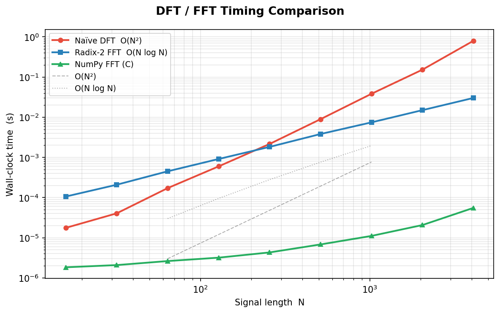
5.3 The 2-D DFT
For an $M \times N$ array $f[m, n]$, the 2-D DFT is defined as:
Because the exponential factors, this separates into a row-by-row 1-D DFT followed by a column-by-column 1-D DFT (or vice versa), reducing the cost from $O(M^2 N^2)$ to $O(MN\log(MN))$. The 2-D magnitude spectrum $|F[k_x, k_y]|$ reveals the spatial frequencies present in an image or field — each bright spot corresponds to a sinusoidal grating at a particular orientation and spacing. This is the same operation used by the angular-spectrum propagator in the §4 diffraction simulation.
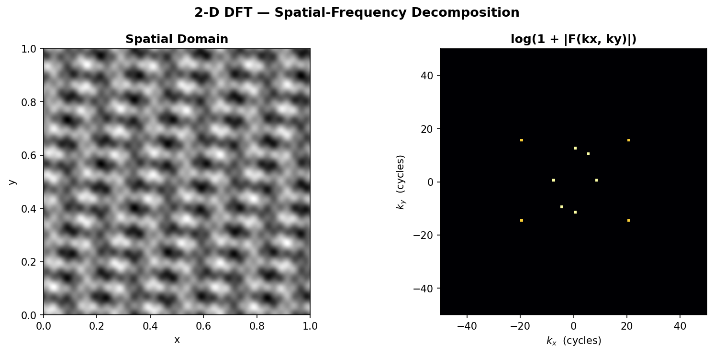
fftshift, with bright spots at the grating frequencies. $ python FFT-Spectral/fft_spectral.py
5.4 Power Spectral Density
Given a signal $x(t)$ sampled at rate $f_s$, its power spectral density (PSD) describes how power is distributed across frequencies. The simplest estimator is the periodogram:
The periodogram is an unbiased but inconsistent estimator — its variance does not decrease with more data, making it noisy. Welch's method fixes this by splitting the signal into overlapping segments, windowing each segment (e.g., Hann window), computing the periodogram of each, and averaging. This trades frequency resolution for reduced variance — the standard approach in practice.
Windowing matters because a finite-length record effectively multiplies the signal by a rectangular window, whose Fourier transform has large sidelobes that leak power between frequency bins (spectral leakage). Smooth windows like Hann or Hamming taper the edges to zero, suppressing sidelobes at the cost of a wider main lobe.
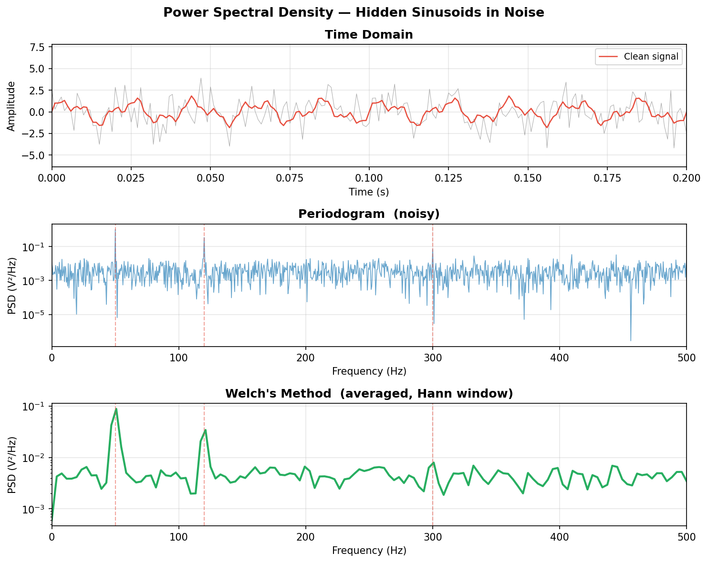
5.5 Spectral Differentiation
For periodic functions on $[0, 2\pi)$, differentiation in the Fourier domain is exact: if $f(x) = \sum_k \hat{f}_k e^{ikx}$, then $f'(x) = \sum_k (ik)\hat{f}_k e^{ikx}$. In discrete form:
For smooth periodic functions, this achieves spectral (exponential) convergence — the error decreases faster than any power of $N$. Compare this with finite-difference stencils, which converge at fixed algebraic rates: $O(h^2)$ for the 2nd-order centred stencil, $O(h^4)$ for the 4th-order stencil, regardless of how smooth $f$ is.
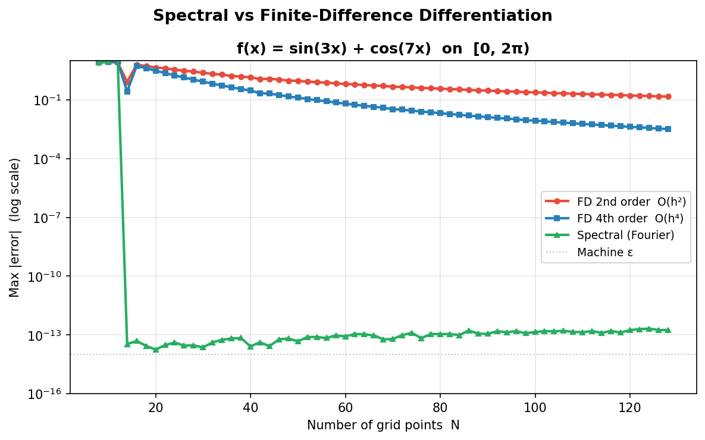
5.6 Chebyshev Polynomials & Spectral Convergence
When $f$ is not periodic, Fourier methods lose their exponential convergence. Chebyshev spectral methods recover it by expanding $f$ in Chebyshev polynomials $T_n(x) = \cos(n\cos^{-1}x)$ on $[-1,1]$. The key is to sample at the Chebyshev–Gauss–Lobatto nodes:
These nodes cluster quadratically near the endpoints, precisely counteracting the Runge phenomenon that plagues equispaced polynomial interpolation. For analytic functions, the interpolation error converges geometrically (exponentially) in $N$, while equispaced interpolation may diverge.
For functions with discontinuities, no polynomial method can avoid the Gibbs phenomenon: oscillations near the jump that persist (at ~9% overshoot) as $N \to \infty$. The oscillations narrow with increasing $N$, but their amplitude does not decrease.
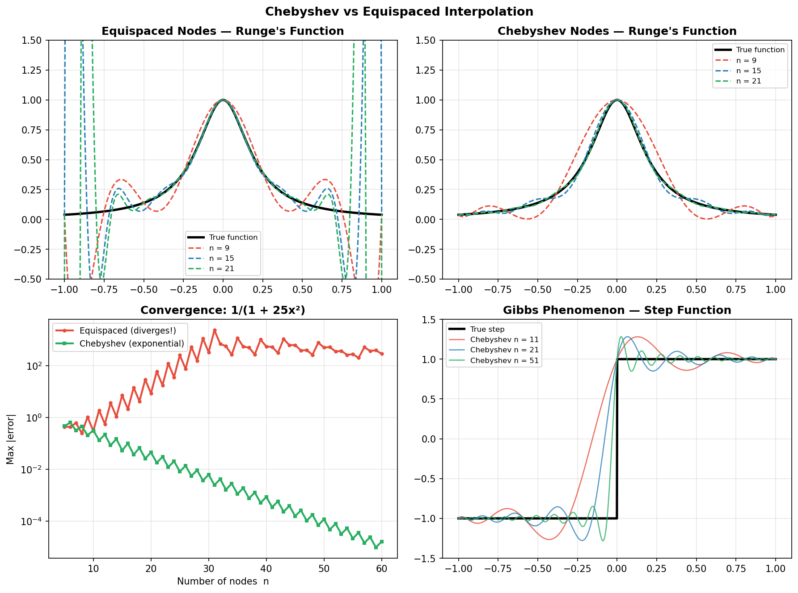
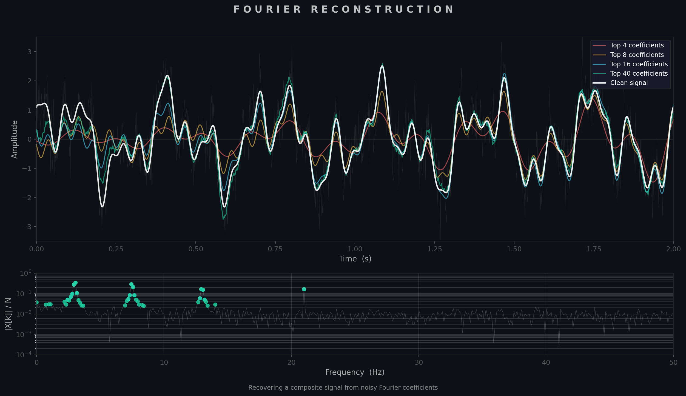
5.7 Implementation & When to Use
scipy.fft for FFTs — it is faster than numpy.fft (multi-threaded, supports real-valued transforms natively), and provides rfft/irfft for real signals (nearly 2× faster and half the memory). For power spectra, use scipy.signal.welch rather than computing the periodogram manually. For spectral methods on non-periodic domains, use Chebyshev nodes with barycentric interpolation — numpy.polynomial.chebyshev or the chebfun package provide production-grade implementations.
FFTs — real signals, zero-padding, normalisation
from scipy.fft import rfft, rfftfreq, irfft
import numpy as np
# Real-valued FFT (only positive frequencies, N//2+1 coefficients)
x = np.random.randn(1024)
X = rfft(x) # shape: (513,)
freqs = rfftfreq(len(x), d=1/1000.0) # Hz
# Zero-pad for finer frequency grid (does NOT add information)
X_padded = rfft(x, n=4096) # 4× zero-padding
# Inverse
x_back = irfft(X, n=len(x))
assert np.allclose(x, x_back)Power spectrum via Welch's method
from scipy.signal import welch
f, Pxx = welch(signal, fs=1000, window='hann',
nperseg=256, noverlap=128)
# f: frequency array (Hz)
# Pxx: power spectral density (V²/Hz)Spectral differentiation (periodic functions)
def spectral_diff(f_vals, L=2*np.pi):
N = len(f_vals)
F = np.fft.fft(f_vals)
k = np.fft.fftfreq(N, d=L / (2*np.pi*N))
if N % 2 == 0:
F[N//2] = 0 # zero Nyquist mode for real result
return np.real(np.fft.ifft(1j * k * F))Choosing a method
| Situation | Recommended method |
|---|---|
| General-purpose FFT (real data) | scipy.fft.rfft / irfft |
| Power spectrum of a noisy signal | scipy.signal.welch (Hann window, 50% overlap) |
| Differentiation of periodic functions | Fourier spectral method (FFT → multiply by $ik$ → IFFT) |
| Interpolation / differentiation on $[-1,1]$ | Chebyshev nodes + barycentric formula |
| Fast convolution / correlation | FFT-based: scipy.signal.fftconvolve |
| 2-D image filtering | scipy.fft.fft2 / ifft2 with frequency-domain mask |
| Solving periodic PDEs | Fourier pseudospectral + exponential time integration |